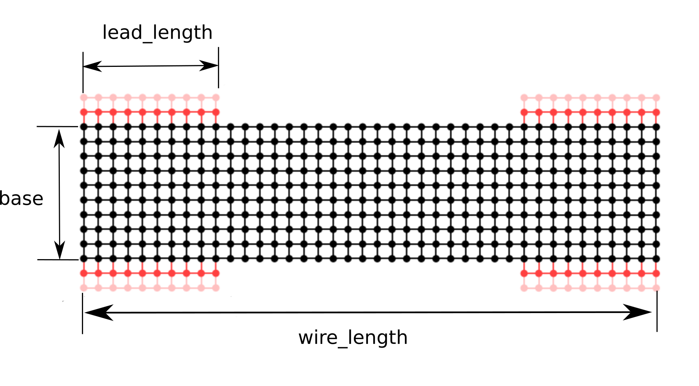

Reference of public functions¶
-
class
garn.Wire2D(base=3, wire_length=30, lead_length=5, identifier='unnamed', file_name='', step_length=1, start_right=True, start_left=True, end_right=True, end_left=True) A Instance of Wire2D describes the properties of a 2D nanowire
Wire2D facilitates the modelling of nanowires with a numerical effective mass method using Kwant by serving as a the nanowire object.
Warning
If keyword parameter file_name is set to anything else than “” all other parameters are ignored. It is only to facilitate the use of parameter file_name that base, wire_length and, lead_length parameters are optional.
Parameters: base : int or float, optional
Width of wire.
wire_length : int or float, optional
Length of complete wire including leads.
lead_length : int or float, optional
Length of lead-wire interface in direction of the
Other Parameters: indentifier : str, optional
Identifies the wire represented in plots and data files produced by garn.
step_length : int or float, optional
Discretization step.
start_right : bool, optional
Boolian vaules of there should be a lead on the right side at the start of the wire (default True)
start_left : bool, optional
Boolian vaules of there should be a lead on the left side at the start of the wire (default True)
end_right : bool, optional
Boolian vaules of there should be a lead on the right side at the end of the wire (default True)
end_left : bool, optional
Boolian vaules of there should be a lead on the left side at the end of the wire (default True)
file_name : str, optional
Uses the data-file specified by the str to create a the instance
-
class
garn.Wire3D(base=3, wire_length=30, lead_length=5, identifier='unnamed', file_name='', step_length=1, start_top=True, start_right=True, start_left=True, start_bottom=False, end_top=True, end_right=True, end_left=True, end_bottom=False) A Instance of Wire3D describes the properties of a 3D nanowire
Warning
If keyword parameter file_name is set to anything else than “” all other parameters are ignored. It is only to facilitate the use of parameter file_name that base, wire_length and, lead_length parameters are optional.
Parameters: base : int or float, optional
Width of wire.
wire_length : int or float, optional
Length of complete wire including leads.
lead_length : int or float, optional
Length of lead-wire interface in direction of the
Other Parameters: indentifier : str, optional
Identifies the wire represented in plots and data files produced by garn.
step_length : int or float, optional
Discretization step.
start_top : bool, optional
Boolian vaules of there should be a lead on the top at the start of the wire
start_right : bool, optional
Boolian vaules of there should be a lead on the right side at the start of the wire.
start_left : bool, optional
Boolian vaules of there should be a lead on the left side at the start of the wire.
start_bottom : bool, optional
Boolian vaules of there should be a lead on the bottom at the start of the wire
end_top : bool, optional
Boolian vaules of there should be a lead on the top at the end of the wire.
end_right : bool, optional
Boolian vaules of there should be a lead on the right side at the end of the wire.
end_left : bool, optional
Boolian vaules of there should be a lead on the left side at the end of the wire.
end_bottom : bool, optional
Boolian vaules of there should be a lead on the bottom at the end of the wire.
file_name : str, optional
Uses the data-file specified by the str to create a the instance.